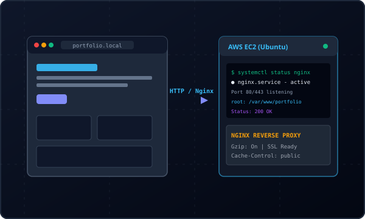
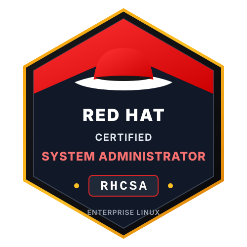

Available for Junior DevOps, Cloud & SysAdmin Roles
Suhail Shihabudheen
RHCSA Certified System Administrator • Aspiring DevOps & Cloud Engineer
Computer Science graduate with hands-on expertise in Linux system administration, AWS cloud infrastructure, and shell automation. Certified RHCSA dedicated to engineering reliable, secure, and maintainable cloud systems.
A focused Computer Science graduate with hands-on Linux administration skills and practical AWS cloud infrastructure experience.
I am a Computer Science and Engineering graduate with a dedicated focus on Linux systems administration, cloud infrastructure, networking, and DevOps practices. Rather than treating servers and infrastructure as black boxes, I enjoy understanding how operating systems, networking protocols, and cloud platforms interact to keep modern services resilient and performant.
To establish a rigorous, industry-recognized foundation, I completed the Red Hat Certified System Administrator (RHCSA) certification. Through hands-on lab environments, I developed practical competence in managing Red Hat Enterprise Linux systems—including storage configuration with LVM, user and permission management, systemd daemon maintenance, firewall rules, and automated shell workflows.
I am applying these systems administration skills towards AWS cloud computing and modern DevOps automation. I believe in writing clear technical documentation, testing deployments systematically, and continuously improving my skills by building practical, reproducible projects.
RHCSA Certified System Administrator
Performance-tested in enterprise Linux administration, disk management with LVM, process maintenance with systemd, and network security controls on Red Hat Enterprise Linux 9.
Education
B.Tech in CSE
Solid academic foundation in operating systems, networking protocols, and computer systems.
Certification
Red Hat RHCSA
Certified System Administrator on Red Hat Enterprise Linux (RHEL 9).
Real-world projects demonstrating cloud provisioning, server administration, and reliable web hosting configurations.

EC2 Hosted Demo
Cloud Deployment & Web Hosting
Personal Portfolio Website
A lightweight, highly responsive developer portfolio built from scratch using pure semantic HTML5, modern CSS, and vanilla JavaScript. Deployed on an AWS EC2 Ubuntu instance and served via an optimized Nginx web server.
Zero runtime frameworks for maximum performance and fast page load times
Nginx web server configuration with static caching and clean routing
Persistent light and dark theme support with accessible typography
A hands-on systems administration lab focused on configuring, hardening, and maintaining an enterprise Red Hat Enterprise Linux 9 environment according to RHCSA practical standards.
Configured users, groups, sudo privileges, and filesystem ACL permissions
Created LVM volumes with dynamic storage expansion and XFS filesystems
Automated administrative backup tasks with cron and custom systemd units
Hands-on, performance-based credential validating core system administration competencies on Red Hat Enterprise Linux.

Verified Credential
Red Hat, Inc. • Enterprise Linux
Red Hat Certified System Administrator (RHCSA)
The RHCSA certification is earned by completing a rigorous, hands-on practical examination testing the core competencies required of system administrators working with Red Hat Enterprise Linux. It verifies practical competence to deploy, maintain, configure, and secure real-world Linux systems.
Essential file management & command-line tools
Operating systemd services & process troubleshooting
Building lightweight container images, multi-stage Dockerfiles, volume persistence, and isolated networking with Docker Compose.
DockerfilesMulti-stageVolumesDocker Compose
Milestone 06Upcoming
CI/CD & Infrastructure as Code
Creating automated continuous integration and continuous deployment pipelines using GitHub Actions, and learning Terraform for reproducible cloud setups.
Interested in discussing DevOps opportunities, cloud roles, or technical collaborations? Feel free to reach out directly.
Let's Connect
I am actively seeking entry-level DevOps Engineer, Cloud Engineer, and Linux System Administrator positions. You can reach me via email or connect through my profiles below.
Download my comprehensive engineering resume outlining my B.Tech coursework, Red Hat Certified System Administrator (RHCSA) credential, hands-on lab projects, and technical skills.